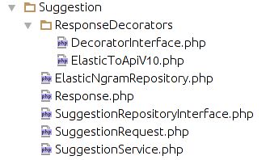

Easy Elasticsearch
Find me : github.com/reshadman / @reshadman
Elasticsearch Jargon
A high performance horizontally scalable search server, written in Java, based on Lucene. And the most important DEVELOPER FRIENDLY.
Who is using in Iran
- Digikala
- Mobinnet (with cassandra)
- iBartar
Who is using globally
- Yelp
- Stackoverflow
- Wikipedia
- And the lovely Github
Full text search
Simply searching a long or small chain of words by matching words instead of characters in a boolean way.
The false positive problem
Problem of returning irrevalant results, with low-precision and low-recall. a simple example is the problem of stop words (like "in", "to") and stemming ( players vs player ).
Lucene and the inverted index
- This is ali
- This is reza
- I am reza too
- this => [0 , 1]
- ali => [0]
- reza => [2, 1]
The TF/IDF as the refree
A simple formula to express the imapct and the value of a matching substring in a horizontal and vertical way. (The impact of the substring in comparsion with the full stored record and also among all other records).
PARTIAL MATCHING | THE SQL WAY
The "LIKE" method in sql. low performance, brute force, and poor in multi token matching
TOKENIZING
The process of breaking sentences into multiple words, each word is considered as a token and is moved to its equivalant inverted index. all of the magic happens here how to break!
NGRAM TOKENS
Breaking words into collection of characters instead of words. Alireza Ahmadi => [al][li][ir] ...
And THE EASY PARTIAL MATCHING
Edge ngram tokens are the king of partial matching!
Elasticsearch the Bads
- Learning curve
- Syncing data
- Expensive server cost
- The fucking io
Elasticsearch the Goods
- Solving any kind of search problem
- Developer friendly
- Horizontally scalable
- A High performance NoSql storage
- Easy to change, suitable for startups
- And really fast
Basic workflow
- Query designing
- Schema Designing
- Mapping
- Indexing
- Querying the index
- Optimizing
The Cassandra way
- Query designing
- Schema Designing for query
- Mapping
- Inserting the query
- Filling the query instead of simple indexing
- Querying like a boss
- Optimizing (large data set)
Query designing
Simply the problem you want to solve. for instance "Searching in title of blog posts when a user enters some words inside the query box"
Schema desining
Making elasticsearch work with your query strategy. for instance for an autocomplete you will need an EdgeNgram tokenizer. You willl create an analyzer for that and apply it to the title field of your blog post index.
Mapping
The equivalant of CREATE TABLE in SQL. You tell elasticsearch how to store data.
Indexing
The time consuming task of indexing your data to be set in the Schema.
Querying
Process of matching a query against your index.
Elastic search at iBartar.com
iBartar heavily uses Elasticsearch as read DB, Complex GIS queries, Aggregation, Fulltext searching and Autocomplete suggester.
Previously on MySql
Problems
- Weak support of Geo features
- Slow on computational queries, like scoring functions
- Join nightmare when searching related entities
- Seriously, not a search solution
Persian language and stemmers
There were lots of problems when dealing with stemmers, how to search "کالانمای برتر" against "کالا نما برتر".

Elasticsearch plugins
Elasticsearch allows us to extend its functionality by Java based modules.
False positive results at iBartar
Minimum unwanted results, and maximize wanted results. The real fucking problem of fulltext search.
Synonyms
Is there a really big difference between "Khatoon Pizza" and "Khatoon Fastfood" ?
Completion suggester
EdgeNgram easily allows us to make a fast completion suggester. Multi query API allows to perform multiple searches at a single I/O. The suggester api has been ported from Laravel to NodeJS for faster response and also implementing a WS API.
Field Aggregators
Elasticsearch aggregators provide an API to group results by a criteria. Allows to implement Faceted search.
Location based queries
Elasticsearch has great features for calculating distances, filtering results inside some coordinates or sorting results based on the distance to the given location.
Elasticsearch with Laravel
Elasticsearch offers a richf REST api to do everything
Elasticsearch PHP SDK
A Guzzle based wrapper arround default REST api of elasticsearch. Personally I don't like it.
Guzzle
HTTP abstraction layer arround PHP's CURL. Fast, Well Maintained And featureful.
- Parallel requests
- Asyncronus requests with RingPHP(An implementation of Clojure's Ring)
- Awesome exception handling
In term of Software design
A simple design for working with elasticsearch REST API.
- Value objects as request containers
- Repository pattern as request performer
- Presenter pattern for forming returning result from Elasticsearch APIs.
- Service classes as managers, containing the business layer.
A real Implmentation schema in PHP
A port to NodeJS
Problem ?
Async behaviour of node in I/O, makes it difficult to implement the previous pattern. the solution is something like function pipeline in angular(like .then or .error functions).
Movie Finder Example
We will create a movie list and try to search for movie titles.
- Creating index
- Creating schema
- Bulk api
- Indexing data
- Querying